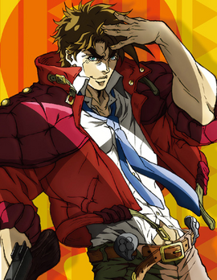

Jonathan Joestar |
Nous commençons avec le premier Joestar de la saga. Héro de la première partie Phantom Blood qui se déroule à la fin du 19e siècle, Jonathan est le fils de George Joestar, un riche industriel qui a perdu sa femme (donc la mère de Jonathan) dans un accident de carrosse. Il vit de jours heureux jusqu'à l'arriver de Dio Brando, un jeune garçon du même âge que lui, qui vient de perdre son père mort d'une étrange maladie. Lui devant une dette après que le père de Dio lui ai sauvé la vie lors de Laccident de carosse, George adopta le jeune garçon et fit de lui son fils. Au début, Jonathan voulait bien l'accueillir, mais Dio convoite l'héritage des Joestar et fera tout pour humilier et briser son frère, être vu comme un meilleur fils, puis se débarrasser du père. Mais Jonathan ne se laisse pas faire et oblige Dio à repenser son plan. Mais, des années plus tard, un mystérieux masque de pierre ainsi que l'art du Hamon va changer le destin de toute la famille. |
|
Joseph Joestar |
Ensuite, nous sautons à la 2e partie: Battle Tendency. Cette fois-ci, c'est l'histoire du petit fils de Jonathan, Joseph Joestar. Se déroulant un peu avant la deuxième guerre mondiale, Joseph vit en Amérique avec sa grand-mère Erina et l'ami de la famille: Robert E.O. Speedwagon. Pendant un repas au restorant, Joseph apprend que Speedwagon a fait une grosse découverte concernant les masques de pierre, mais qu'il se serait fait tuer par son ami: Straizo et qu'il chercherais à le tuer. Fou de rage, Joseph décide d'aller l'affronter. Au cours de l'affontement, il apprend que Speedwagonest toujours en vie, mais s'est fait capturer par les nazis au Mexique. Ni une, ni deux, Joseph fonce au Mexique. En revanche, les nazis ont fait une autre découverte: une mystérieuse créature dans la pierre plus menacante que prévu et il faudra plus que le Hamon pour le surpasser. |
 |
Jotaro Kujo |
Nous voilà à la partie 3 de cette série. Cette partie est spéciale puisque elle introduit les stands, une nouvelle façon de combattre (voir page sur les stands). Dans Stardust Crusaders, on suit Jotaro Kujo, vivant au Japon avec sa mère. Mais, pendant une journée banale, il décide de s'enfermer lui-même en prison, se disant la proie d'un esprit maléfique. Désemparée, sa mère demande l'aide à son père: Joseph Joestar. Joseph se rend jusqu'à son petit-fils et lui explique que l'esprit maléfique est la matérialisation de son esprit vital est combatif: le stand. Après l'avoir sorti de prison, Joseph explique une mauvaise nouvelle: DIO est de retour et il vient avec un stand et des adeptes. Ainsi commence cette aventure où il devront voyager pour arrêter une vieille menace |

|
Josuke Higashikata |
Direction: Partie 4 avec Diamond is unbreakable. Cette fois-ci, le Protagoniste est Josuke Higashikata, vivant à Morio, Japon avec sa mère. N'ayant jamais connu son père, il reçoit lors de la rentrée scolaire, la visite de Jotaro Kujo qui lui explique que son père est Joseph Joestar, qu'il a été concus lors d'une aventure extra-conjugale et qu'il fait parti de son testament. Ayant vu le stand de Josuke et sachant que de mystérieux crime se déroule, Jotaro décide de rester à Morio. Sous l'aspect d'une ville tranquille se cache une des cas inquiétants et de gens malveillant. |
|
Giorno Giovanna |
Voici la partie 5 de cette série: Golden wind. Se déroulant en Italie, Giorno a vécu une enfance malheureuse jusqu'au jour où il devient ami avec un gangster blessé en lui sauvant la vie. Depuis ce temps, Giorno décide de lui aussi devenir un gangster pour aider les gens (oui c'est étrange mais voua allez comprendre en regardant l'anime). Une fois qu'il acquiert son stand, il rejoint le groupe Passionne où il va grimper les échellon pour parvenir à son rêve. |

|